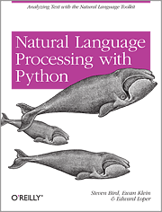
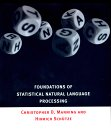

About this course
- Location: Burnaby Mountain Campus
- Class number: 13756
- Section: D100
- About the course:
Computational Linguistics is the study of human language from a computational perspective. This course will examine algorithms used in the automatic analysis or production of language. Along with formal models of language, we will also study the engineering of natural language processing software.
- Course Outline: on CS Portal
- Grading for the course:
- Final Project (due on Apr 12, 2012): 20%
- 2 midterms: 20% each (total of 40%)
- 4 homeworks: 10% each (total of 40%)
Textbook and References
Textbook:
- There is no official textbook for this course; use the lecture notes and reading from Syllabus.
- You should be able to attempt all homework questions and midterm/final questions without using the textbooks below. However they may contain useful background information that will help you understand better the course materials and lectures.
Recommended Textbooks:
-

Speech and Language Processing: An Introduction to Natural Language Processing, Computational Linguistics, and Speech Recognition by Daniel Jurafsky, James H. Martin. 934 pages 1 edition (January 26, 2000), Prentice Hall, ISBN: 0130950696
The book also has a webpage. In particular visit it for the Errata and the online Resources sections.
We will follow the material in this textbook closely but not in all aspects. The exercises and discussion in this book will be helpful to supplement what is discussed in class. -
 Introduction to Natural Language Processing by Steven Bird, Ewan Klein and Edward Loper. This book describes the Python-based Natural Language toolkit that we will use in the homework and will provide additional reading material for that purpose. Note that the tutorials needed for the homeworks are available online on nltk.sf.net.
Reference Textbooks:
Material that I use from time to time, but not required reading for those taking the course.
|  | Foundations of Statistical Natural Language
Processing by
Christopher D. Manning, Hinrich Schutze. 680 pages 1 edition (1999),
M.I.T. Press/Triliteral, ISBN: 0262133601 This book will be useful in cases where you want a different presentation of the same material that is required reading from J&M. In many cases the statistical approaches are covered in a bit more detail in this book. However, it does not contain all the topics that we will cover in this course. |
Syllabus and Readings
The following list summarizes the topics that will be covered in this course. Also included are the required and optional readings for each topic. J&M refers to the book "Speech and Language Processing" by Jurafsky and Martin. Apart from the required readings, the optional or review readings are provided for those who are having difficulty understanding the material.
- Introduction to Linguistics and Formal language theory
- Notes #1 (1/16/2012)
- Notes #2 (1/16/2012)
- Chp 1 and 2 (J&M)
- Readings:
- Lillian Lee. I'm sorry Dave, I'm afraid I can't do that: Linguistics, Statistics, and Natural Language Processing circa 2001. The National Academies' study on the Fundamentals of Computer Science.
- Steven Abney. Statistical Methods and Linguistics. In: Judith Klavans and Philip Resnik (eds.), The Balancing Act: Combining Symbolic and Statistical Approaches to Language. The MIT Press, Cambridge, MA. 1996.
- Links: Festival: Open-source text to speech, Speech Animation at AT&T
- Links: CMU Communicator: Dialog System, RUTH: Rutgers University Talking Head, WordsEye: NLP & Graphics
- Finite-state methods: automata and transducers (applications to orthography, morphology, phonology)
- Finite-state methods: edit distance (shortest path in a transducer, spelling correction, evaluation metrics)
- Notes #7 (2/8/2012)
- Chp 5 sections 5.1-5.6 (J&M)
- Links: Levenshtein Demo
- Probability models and language: n-grams
- Notes #8 (2/20/2012)
- Notes #9 (2/20/2012)
- Notes #10 (3/5/2012)
- Notes #11 (3/5/2012) (
long version) updated: 3/19/2012 - Required Reading: Chapter on Natural Language Corpus Data by Peter Norvig in Beautiful Data (Segaran and Hammerbacher, 2009)
- Required Reading: Sections 1-14 from Kevin Knight's statistical MT workbook
- Reading: Sections 1-2.7 (p.15) & Section 5.1 from Empirical Study of Smoothing by Chen and Goodman
- Chp 6 sections 6.1-6.2 and 6.7 (J&M).
- Links: TextCat and languid: language identification based on n-gram matching
- Hidden markov models (sequence learning)
- Notes #12 (3/7/2012)
- Notes #13 (3/7/2012) (
long version) updated: 3/19/2012 - Spreadsheet demos: Viterbi algorithm and HMM Learning
- Chp 5 section 5.9; sections 7.1-7.3 and Appendix D (J&M)
- Additional Reading: Pseudo-code for HMM Learning
- Additional Reading: Maximizing the posterior for HMM model learning
- Some applications of sequence learning (automatic speech
recognition, part of speech tagging, name-finding,
word segmentation)
- Notes #14 (3/19/2012)
- Chp 8 sections 8.1-8.5 (J&M)
- Context-free grammars and parsing algorithms (natural language syntax)
- Notes #15 (3/19/2012)
- Notes #16 (3/19/2012)
- Notes #17 (3/26/2012)
- Notes #18 (3/26/2012)
- Chp 9 and Chp 10 (J&M)
- Reading: Notes on grammars and parsing by Anoop.
- Earley Algorithm (ppt) from Jason Eisner's NLP course
- Review: Chp 2 and 4.1 (Sipser)
- Feature structures and unification
- Notes #19 (4/2/2012)
- Supplementary transparencies (4/2/2012)
- Chp 11 (J&M)
- Lexical semantics and word-sense disambiguation
- Notes #20 (3/26/2012)
- Chp 16 and Chp 17, sections 17.1 and 17.2 (J&M)
- Selected topics in NLP
- Discourse and dialog models
- Chp 18, section 18.1 and Chp 19, sections 19.1-19.3 (J&M)
- Natural Language Semantics (translation into logic, language understanding, language generation)
- Chp 14 and 15 (J&M)
- Natural Language and complexity theory (mathematical linguistics)
- Chp 13 (J&M)
Homeworks
For all the information regarding homeworks, please read Homework submission policies.
- Homework #1. Due Jan 31.
- Additional Reading: Short Introduction to NLTK by S. Bird, E. Klein and E. Loper.
- Additional Reading for Python newbies: Python Tutorial by Guido van Rossum. Read upto Chapter 10.
- The data files are in the directory:
~anoop/cmpt413/hw1/on fraser.sfu.ca. - Check against testcases with:
python check-hw1.py - Python tidbits.
- Homework #2. Due Feb 21.
- The data files are in the directory:
~anoop/cmpt413/hw2/ - Check against testcases with:
python check-hw2.py - CMU Pronunciation dictionary: cmudict
- OpenFST fst toolkit:
~anoop/cmpt413/sw/linux/openfst-1.2.10; OpenFST download and documentation. - Homework #3. Due Mar 13.
- The data files are in the directory:
~anoop/cmpt413/hw3/ - If you choose to do Question 12, read Kevin Knight's workbook on statistical machine translation.
- umdhmm is available on CSIL Linux machines in the directory:
~anoop/cmpt413/sw/linux - Homework #4. Due Mar 27.
- The data files are in the directory:
~anoop/cmpt413/hw4/ - Final Project.
- 1st Submission due on Apr 10 (deadline extended to Apr 11, 11:45pm).
- Final submission on Apr 13 (deadline extended to Apr 16, 9am).
- The data files are in the directory:
~anoop/cmpt413/finalproject/
Homework submissions and grading
Files and Subversion
- The directory
~anoop/cmpt413/hw1is available onfraser.sfu.ca. - Use Subversion (svn) for your homeworks.
$ svn co https://punch.cs.sfu.ca/svn/CMPT413-1121-(your-userid) $ cd CMPT413-1121-(your-userid) $ scp -r fraser.sfu.ca:~anoop/cmpt413/hw1 . $ svn add hw1 $ cd hw1/answer # put all your python programs here # svn add each file you add to this directory $ svn commit -m 'commit message'
- To continue working at a later date:
$ cd CMPT413-1121-(your-userid)/hw1/answer $ svn update # work on your homework $ svn commit -m 'commit message'
- There are strict requirements on the filenames for your programs. The filenames to be used is provided in
readme.txtfile. These steps will enable us to consistently test all the submissions using the same method (see the information about automated testing below).
Programming
- We will be using the Python-based NLTK: Natural Language Toolkit for most of the homeworks in this course (version 2.0rc1 is installed and should be used for the homeworks).
- Run
pythonand then type inimport nltk. If you get an error then something went wrong. Email csilop@cs.sfu.ca with the details.
Testing
- You must test your programs on the CSIL Linux machines before you submit.
- You can check the output of your programs against the testcases by running
python check-hw1.py(similarly for hw2, hw3, ...). Run without any arguments to get a detailed description of how it does automatic testing and how we use it for grading. - It is a good idea to test your programs each time you change your programs.
Working Remotely
- You can use ssh to connect to the CSIL Linux machines (peach.csil.sfu.ca, mango.csil.sfu.ca, ... you get the idea).
- CSIL computers accept SSH connections on port 24 (rather than the usual port 22). They can only be accessed from within the SFU network. If you are outside it, you need to go through a directly accessable computer, most likely fraser.sfu.ca. Here are some examples using the usual command line
sshandscp(from OpenSSH). Below $ is the command line shell on your home computer running Linux/MacosX/Cygwin, and blackberry is a CSIL Linux machine.# Get to blackberry in two steps $ ssh fraser.sfu.ca fraser$ ssh -p 24 blackberry.csil.sfu.ca blackberry$ # Get to blackberry in one command (-t is to force a proper terminal for the second ssh) $ ssh fraser.sfu.ca -t ssh -p 24 blackberry.csil.sfu.ca blackberry$
- You can also use the NX terminal server to connect via remote desktop. See: How to use CSIL Linux terminal server.
- CSIL uses a seperate home directory from the rest of SFU, so you also have to copy files through fraser. However, it looks like it now has a separate home for each machine, so you probably want to just keep your files in your SFU home.
# Copy a directory to your SFU home directory (to copy a single regular file, omit -r) $ scp -r my-directory fraser.sfu.ca:. # Now it is ~/sfuhome/my-directory in CSIL, or you can scp again between fraser and a CSIL computer # Copy a directory from your SFU home directory out $ scp -r fraser.sfu.ca:my-directory .
- On some CSIL Linux machines, in some rare cases, you might have to extend your CPU time limit for a process. If you are using tcsh then run the command "limit cputime 1800" to extend CPU time to 1800 secs or 30 mins. If you are using bash then use the command "ulimit -t 1800".
Homework Submission
- Your homework will be submitted electronically using the department-provided submission server. Connect to the submission server by going to the URL: https://courses.cs.sfu.ca/ (your grades for the homeworks will also be tracked on the same web page)
- All homeworks are due by 11:45 PM on the homework due date.
Homework Grading
- You have 4 grace days for the entire semester. You can use up your grace days, one per homework, or all 4 for one homework (in general, any integer partition of 4, which is [[1, 1, 1, 1], [1, 1, 2], [2, 2], [1, 3], [4]] source code). If you use up all your grace days then the maximum grade if you are late will be 50 percent of the original score for that homework. Each additional day will reduce the maximum grade further by 10 percent. Weekend days count the same as weekdays for the late penalty.
- If you want to do extra stuff make sure it is correct -- it is probably not a good idea to advertise to the TA that you got something wrong.
- Only do extra stuff if you have finished the entire homework.
- There is no extra credit for doing more, mainly because it is a pain to grade that way.
- However doing the extra optional question for your own understanding will likely help you with the concepts covered in the course and hence you may do better in the exams or future assignments.
- Read the Mark Appeals policies in the Policies section of this web page.
Policies
Email policy
- Use the prefix "cmpt-413: " on all your messages. If you do not include the prefix, then the mail might go unanswered.
- Send email to the course mailing list (cmpt-413@sfu.ca) rather than individually to the instructor or the TA. This way, more than just one person is able to respond to your email.
Homework submission policies
- For homework policies, see the Homeworks section
Exams
- If you must miss an exam because of a medical problem, you should make an attempt to contact me prior to the exam either by email or a message in my mailbox.
- To request an extension of the due date due to a medical problem, you must submit the offical SFU Health Care Provider statement.
- If you miss an exam due to valid medical reasons you will be graded on your performance on the rest of the course.
- Make up exams will not be given under any circumstances.
Disclaimers about this web page
- All course information on this web page is tentative and could be in error. It can also change at any time. Confirm crucial dates or information with me in person during class. Double check with SFU calendar or schedule information for official class times and final exams time and location.
- Students are expected to attend all classes: announcements about assigned readings, homeworks and exams will be made available at the start of each class. Such announcements may not be made on this web page, so don't rely on information here instead of attending class.
- Lecture notes or other materials put up on this web page are only additional material and not an alternative to the readings assigned. Only reading the lecture notes will not be enough to prepare for the homeworks or the exams.
Academic Honesty
- Some examples of unacceptable behaviour:
- Handing in assignments that are not 100% your own work (in design, implementation, wording, etc.), without proper citation.
- Using any unpermitted resources during an exam.
- Looking at, or attempting to look at, another student's paper during an exam.
- Submitting work that has been submitted before, for any course at any institution.
- If you are unclear on what academic honesty is, see SFU's Policy S10-01 and the University code of academic honesty.
- All instances of academic dishonesty will be dealt with very severely.
- In general, minimum requested penalties will be as follows:
- For assignments: a mark of -100% on the assignment. So, academic dishonesty on an assignment worth 5% of your final mark will result in a zero on the assignment, and a penalty of 5% from your final grade.
- For exams: an F in the course.
- Please note that these are minimum penalties. At the instructor's option, more severe penalties may be given/requested. All instances of academic dishonesty will be noted on your University record.
- The instructor may use, or require students to submit assignments to, an automated service that will check for plagiarism.
Exams and Tests
- Midterms may be in different rooms than the lectures. You will be notified by email.
- Exams may be written in either pen or pencil. Calculators or other aids are not allowed unless explicitly stated.
- Midterm exams and other tests may or may not be returned, depending on the course. If they are returned, you can get them from the instructor's office hours. You can not dispute the marking of your exam after you have taken it out of the instructor's office.
- Final exams are not returned to students by University policy; they are kept by the instructor.
- If you miss a test or exam, you must present a note from a doctor to get a mark other than zero. Arrangements to make up the lost marks will be made on a case-by-case basis by the instructor. Make-up exams may be given as an oral examination.
- You must get a pass on the weighted average of the exams to pass the course.
Mark Appeals
Except for final grades, this is how you can go about getting your mark changed:
- Requests for a change in your mark must come to the course instructor. TAs will not change your mark, except for errors in addition or data entry.
- Requests should come in the same form as you received your marks: if you got marks by email, forward that email to the instructor; if you had paper handed back, return that.
- You should give a brief explanation of why you want your mark reevaluated.
- The instructor will remark the entire assignment/test. This will be your mark, whether it is higher or lower than the original.
- Appeals may be made up to two weeks after the mark is returned or until the final exam date, whichever is first. After that deadline, you must make a formal mark appeal for any changes.
- For exams in particular, these are not reasons to get more marks:
- I knew what I was saying here, but didn't write it.
- This is the correct answer for some question other than the one asked, but I didn't get any marks for it.
- I didn't understand the question.
Final Exam and Final Marks Appeals
If you're concerned about your mark at the end of the course, you can see the instructor. Here are some guidelines:
- You can come to the instructor's office at designated times to review your final exam.
- Like assignments, you can ask the instructor to reevaluate your final exam marking.
- The following are not good reasons to get a higher final mark:
- I want it.
- I think I deserve it.
- I need it.
- I'm close to the next grade cutoff.
- This is a good reason:
- There's a marking irregularity on my final or some other piece of work.
- The marking scheme is fixed. If you did badly on a midterm, you can't weight the final more heavily.